Identifica tus Pasiones e Intereses:
Comienza por hacer una lista de tus pasiones, intereses y áreas en
las que tengas experiencia o habilidades. Un proyecto relacionado con algo que te apasione será más
motivador y gratificante.
Encuentra Problemas por Resolver: Observa tu entorno y encuentra problemas o necesidades que puedan ser abordados mediante una solución. Pregúntate a ti mismo qué aspectos de la vida podrían mejorarse o simplificarse.
Encuentra Problemas por Resolver: Observa tu entorno y encuentra problemas o necesidades que puedan ser abordados mediante una solución. Pregúntate a ti mismo qué aspectos de la vida podrían mejorarse o simplificarse.
 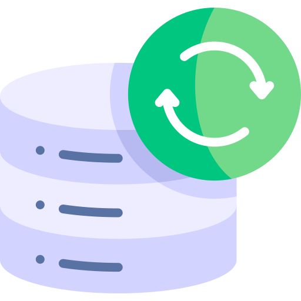
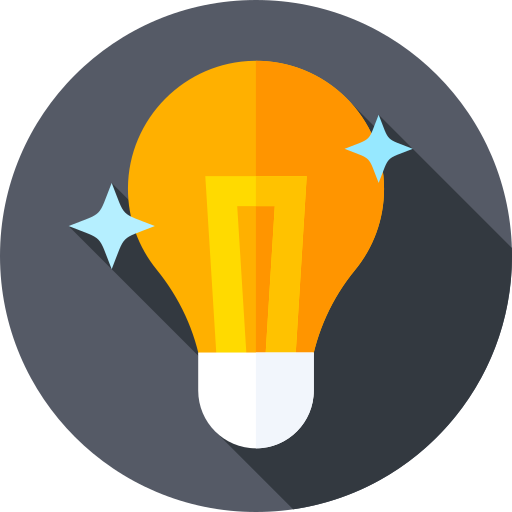
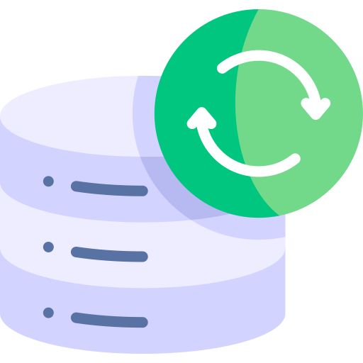
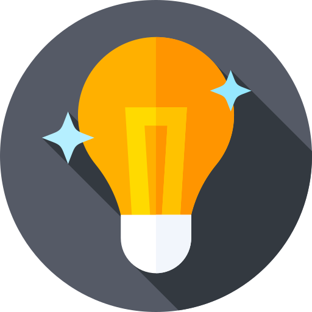
investiga y Encuentra Inspiración
Investiga en línea, lee libros, asiste a eventos y conferencias, y
habla con personas en diferentes campos. La inspiración a menudo proviene de conocer lo que otros
están haciendo.
Combina Ideas: A veces, tomar dos ideas aparentemente diferentes y combinarlas puede generar una
idea única y emocionante. Por ejemplo, podrías combinar tecnología y arte, salud y gamificación,
etc.
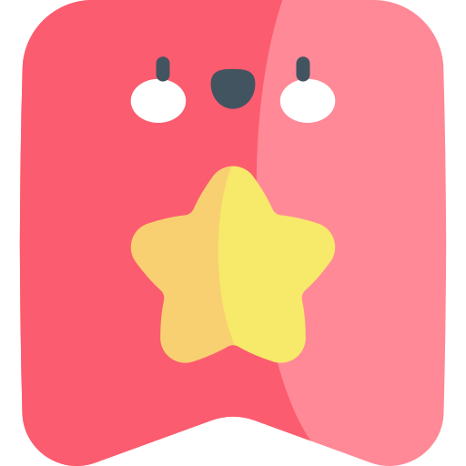
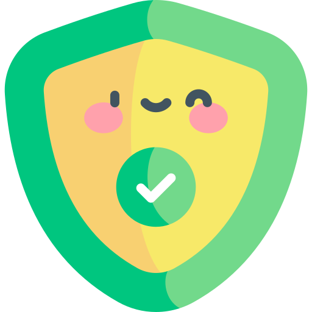
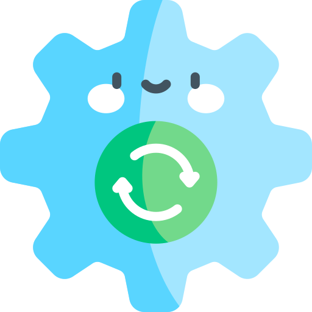
Soluciona un Problema Personal
Si enfrentas un problema personal, es
probable que otras personas también lo estén experimentando. Desarrollar una solución para tu propio
problema puede llevar a un proyecto valioso.
Investiga Tendencias Emergentes: Estudia las tendencias actuales en tecnología, estilo de vida,
sostenibilidad, etc. Identifica cómo podrías aprovechar estas tendencias en tu proyecto.
 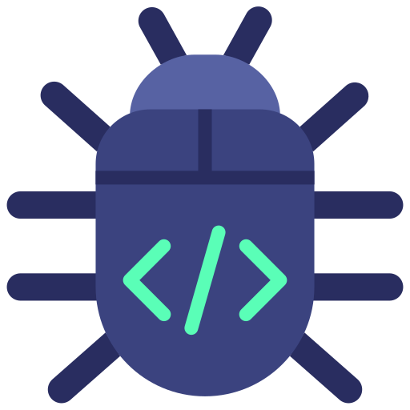
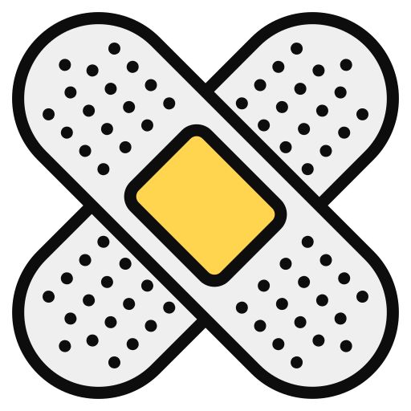
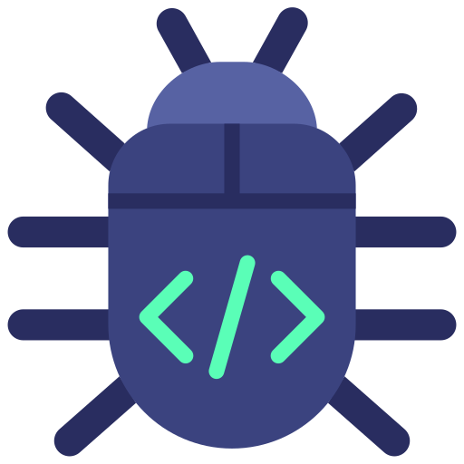
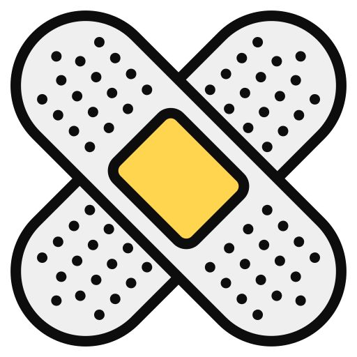
Piensa en un Enfoque Local
Piensa en un Enfoque Local: Considera los desafíos y oportunidades en
tu comunidad local. Un proyecto que beneficie a tu entorno puede tener un impacto significativo.
Crea un Mapa de Ideas: Haz un mapa visual con tus ideas y posibles enfoques. Esto puede ayudarte a
organizar tus pensamientos y ver conexiones entre diferentes conceptos.
Prototipa y Valida: Una vez que tengas una idea, desarrolla un prototipo o una versión mínima viable
(MVP) para validar su viabilidad. Obtén comentarios de otras personas para perfeccionar tu concepto.
Investiga la Competencia: Investiga si existen proyectos similares y analiza cómo podrías
diferenciarte o mejorar lo que ya está disponible.
Define Objetivos y Alcance: Define claramente los objetivos y el alcance de tu proyecto. Esto te
ayudará a mantenerte enfocado y a medir el éxito a medida que avances.
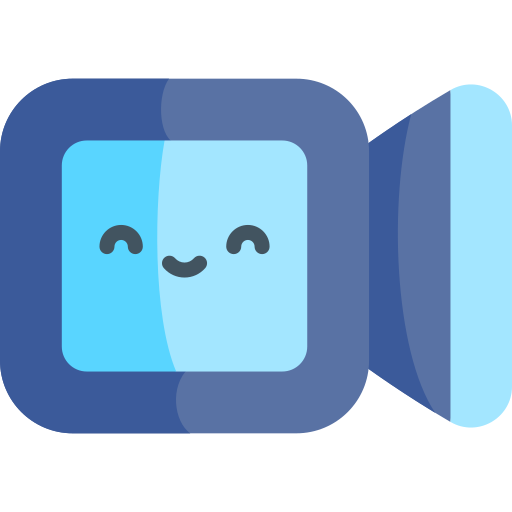
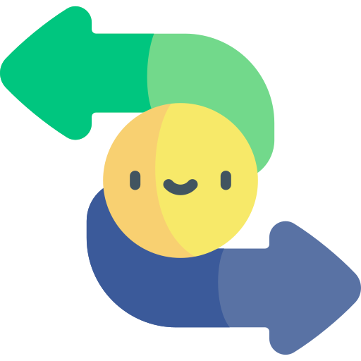
.gif)
- dónde puedo encontrar los cursos
- quiero un curso gratuito
- cómo puedo hablar con epsa
- cómo puedo mandar una queja
- tienen redes sociales
- cómo puedo moverme por la página
- cómo va el trading
- no encuentro las convocatorias